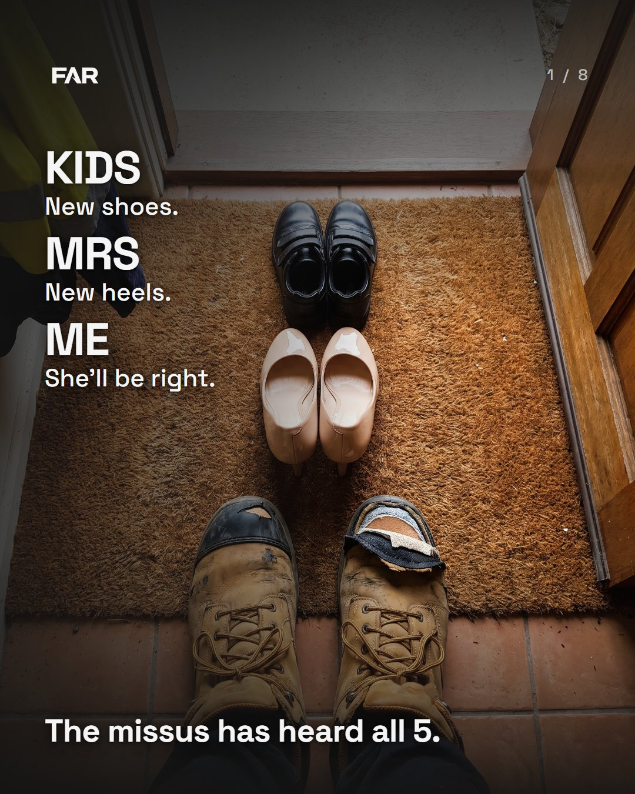
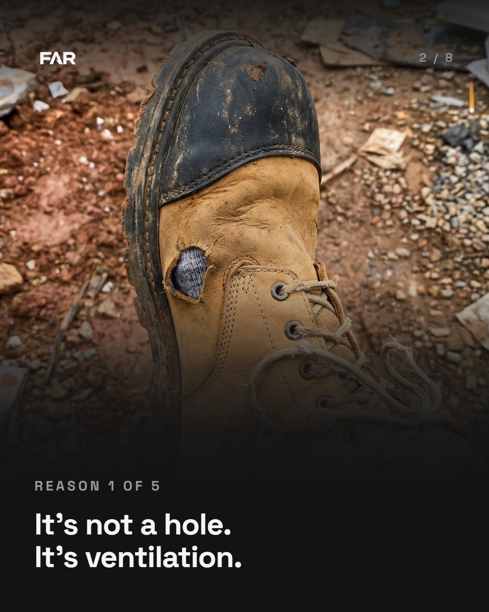
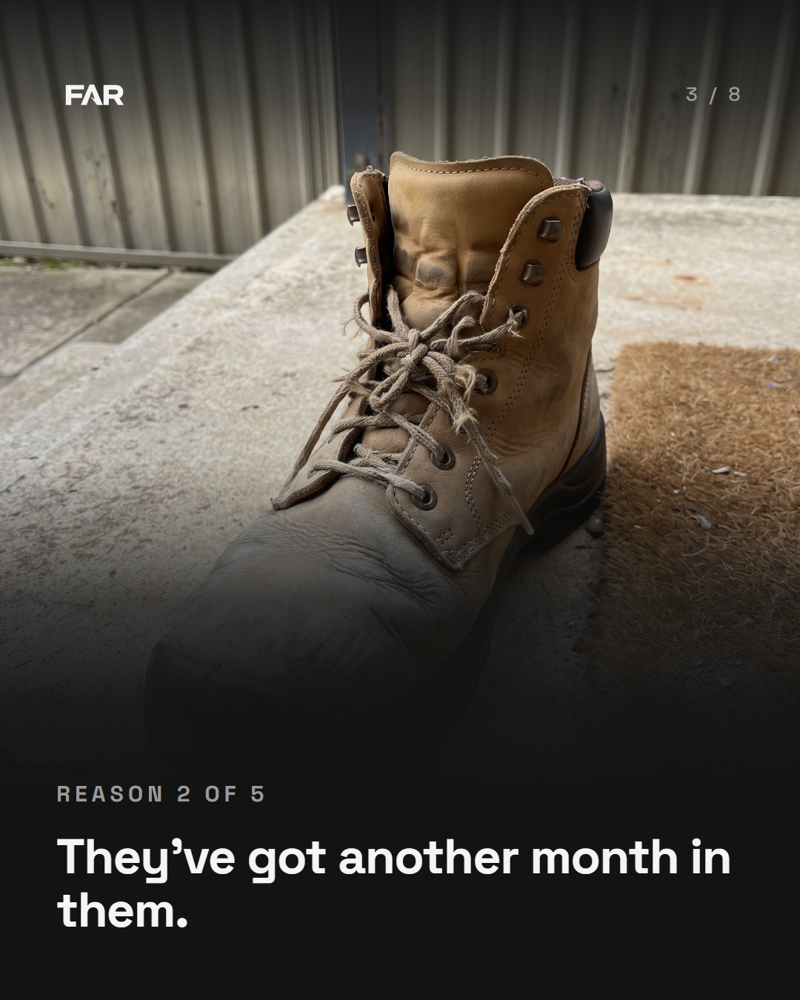
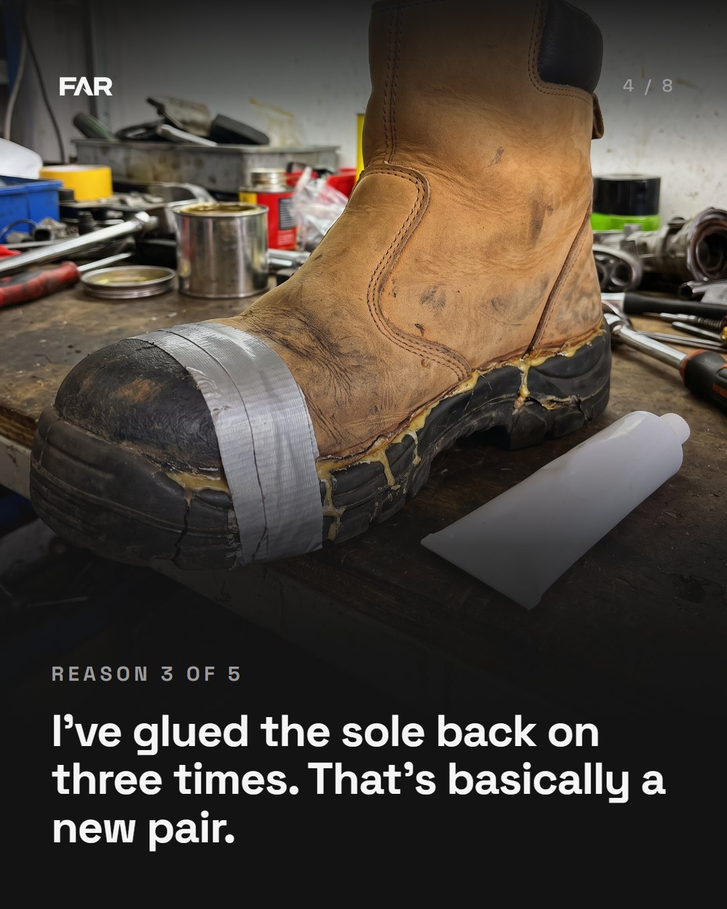
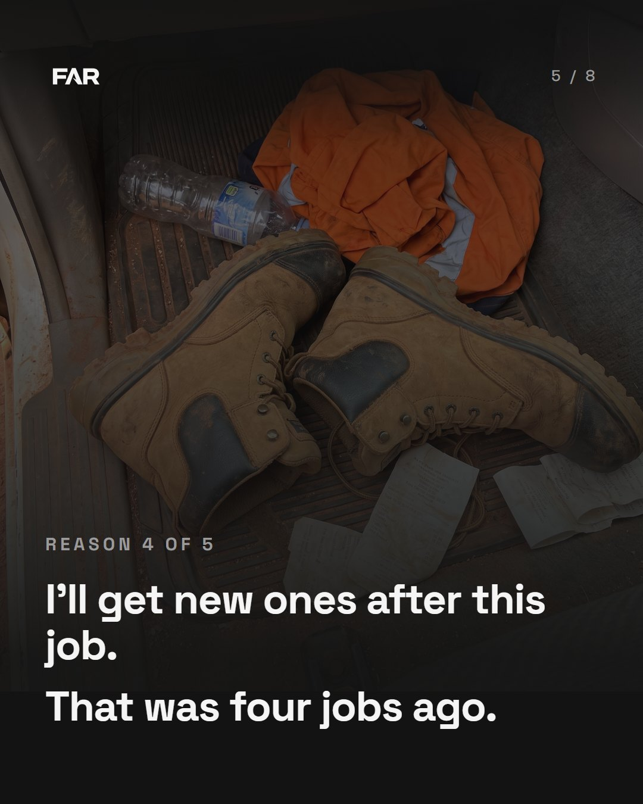
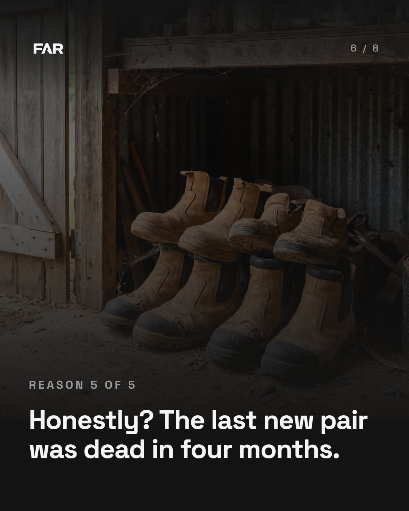
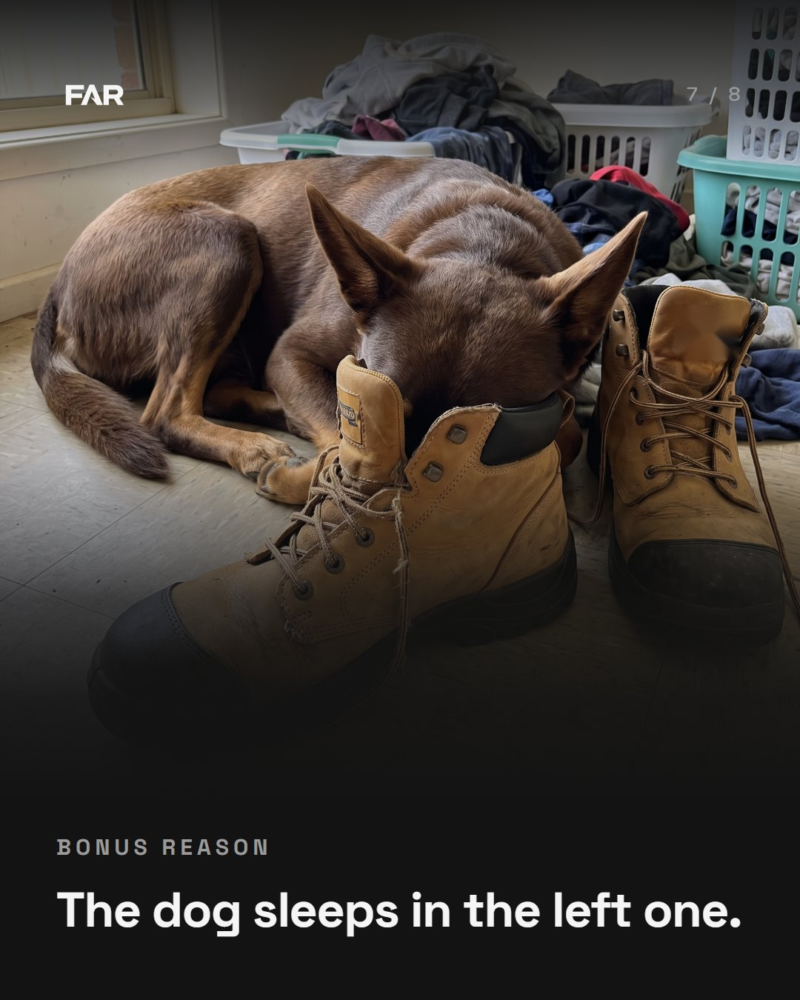
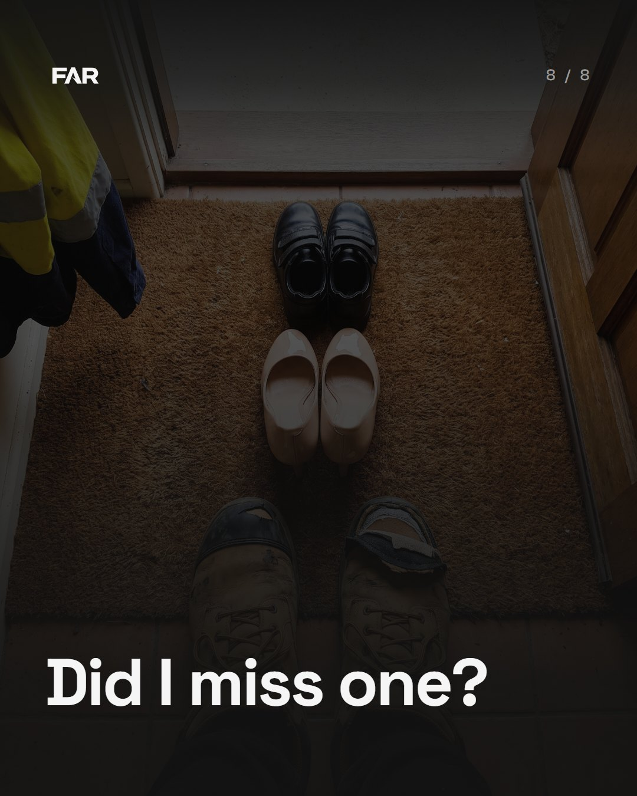

The doormat version, 8 slides
Slide 1 is the doormat photo with a new bottom line. Slide 8 is new: one question to pull comments, on the same photo darkened, so the post ends where it started. Slides 2 to 7 are unchanged apart from the counter.








Slide 1, bottom line
He reads it and checks which ones he's said to her. Ties back to the MRS line above it. Never tells him it's about him.
A dare, which our own rule allows. But it asks a question on slide 1 and slide 8 asks another one, so the post asks twice.
Safe, but it reads like a list heading. Flatter than the two above.
This tells the reader what he's done, which is the line we banned on 5 Oct ("I know you've said it before"). It also drops the 5 from slide 1.
Slide 8, the question
Keeps the same bloke talking from slide 1 to the end. The bonus reason on slide 7 already shows the list is open, so this is the natural next beat.
Easier to comment on: you can put your mate's excuse in instead of your own.
Passed the checks, but out loud it can sound like "you've got no excuse", a jab at the reader.
What goes up tonight
Caption: Ours are in the shed too.
Pinned comment (post from the FAR account straight after, then pin it): Missed one. They're only just broken in.
Music: on at upload, any track, low.
Comments: reply to the new excuses the same day.
The slides and the posting note are in Drive: 00 Posting content / Week 41 / Thursday. This page is unlisted, but anyone with the link can open it.